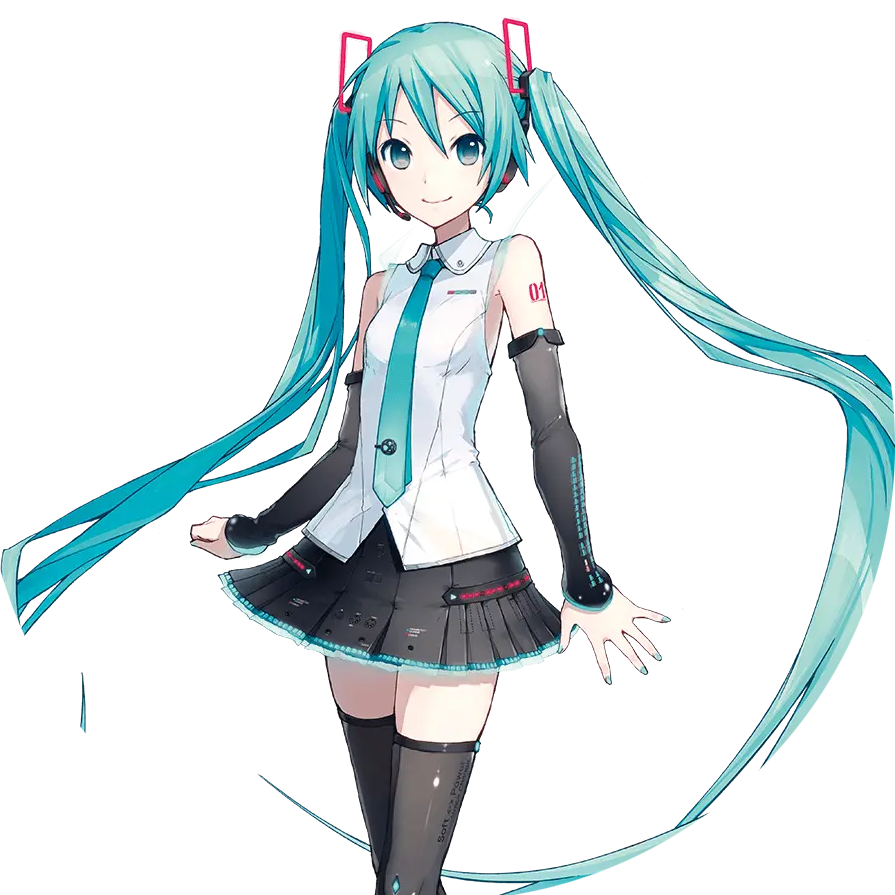
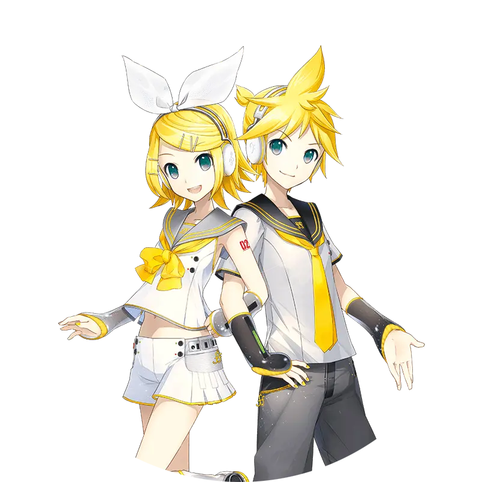
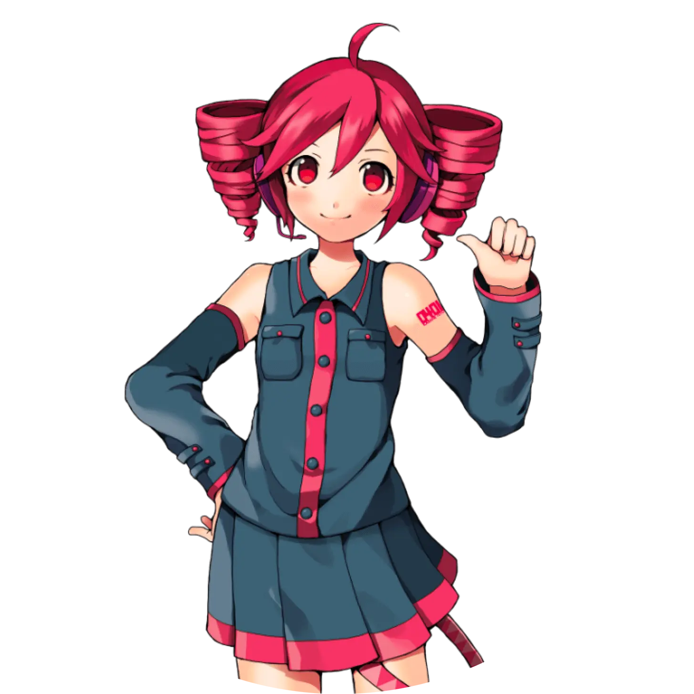

VOCALOID是Yamaha开发的歌声合成技术以及基于此项技术的软件。通过输入歌词和旋律，VOCALOID可以合成出类似人类唱歌的声音。
VOCALOID软件拥有多个"歌声库"，每个歌声库都有独特的声音特点和形象设定，被称为"VOCALOID角色"。这些角色由不同的公司开发，拥有各自的粉丝群体。

Hatsune Miku
代表色：苍绿色
Hatsune Miku / はつね みく
代表色：苍绿色 (#39C5BB)
初音未来是Crypton Future Media开发的VOCALOID2歌声库，于2007年8月31日发售，是最著名的VOCALOID角色之一。
她的形象由画师KEI设计，标志性的青绿色双马尾成为其象征。作为VOCALOID界的"虚拟歌姬"，她拥有无数的原创歌曲和二创作品。
从《甩葱歌》的爆火开始，到后来的《世界第一的公主殿下》《千本樱》等名曲，初音未来已经成为了一个跨越次元的文化现象，甚至举办了自己的全息演唱会。

Kagamine Rin / Len
铃 / 连
Kagamine Rin / Len / かがみね りん・れん
铃：橙色 (#FFA500) 连：黄色 (#FFE211)
镜音铃和镜音连是Crypton Future Media开发的VOCALOID2歌声库，于2007年12月27日发售，是继初音未来之后的第二弹VOCALOID角色。
官方设定为"镜子里映射出的另一个自己"，铃是姐姐，连是弟弟。两人拥有各自独立的歌声库，也可以进行合唱。
代表曲目有《右肩の蝶》《炉心融解》《悪ノ娘》《悪ノ召使》等。他们的Append版本和V4X版本进一步提升了歌声表现力。

Kasane Teto
代表色：酒红色
Kasane Teto / かさね てと
代表色：酒红色 (#B84A6B)
重音Teto最初是2008年4月1日愚人节企划"伪VOCALOID"中诞生的角色，由2ちゃんねる的网友们共同创作。
虽然最初只是玩笑，但因其独特的性格设定和可爱的外形获得了极高人气，后来通过UTAU歌声合成引擎正式拥有了自己的声音库。
官方设定是"拥有双马尾的傲娇少女"，喜欢法棍面包，性格有些傲娇但很可爱。代表曲目有《おちゃめ機能》《テオ》等。
Kaai Yuki
代表色：红色
Kaai Yuki / かあい ゆき
代表色：红色 (#E63946)
歌爱雪是AH-Software开发的VOCALOID2歌声库，于2009年12月4日发售，以小学生少女的声音为特征。
她的声音录制自真实的小学生声优，因此拥有非常真实可爱的童声。形象由画师梅谷阿久津设计，背着书包的小学生造型非常有特色。
代表曲目有《ハロー・ライフ》《sing a song》等。她的V4版本新增了Natural和Sweet两种声线，进一步拓展了表现范围。